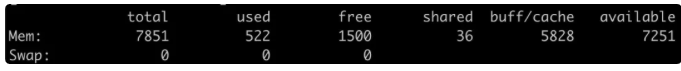

第十一节 5 分钟搞懂高性能分布式消息系统 Kafka
kafka 由 LinkedIn 公司推出的一个高吞吐的分布式消息系统，通俗的说就是一个基于发布和订阅的消息队列。
1、 应用场景
- 异步解构：在上下游没有强依赖的业务关系或针对单次请求不需要立刻处理的业务；
- 系统缓冲：有利于解决服务系统的吞吐量不一致的情况，尤其对处理速度较慢的服务来说起到缓冲作用；
- 消峰作用：对于短时间偶现的极端流量，对后端的服务可以启动保护作用；
- 数据流处理：集成 spark 做实时数据流处理。
2、Kafka 拓扑图（多副本机制）
由上图我们可以发现 Kafka 是分布式，同时对于每一个分区都存在多副本，同时整个集群的管理都通过 zookeeper 管理。
2、Kafka 核心组件
2-1 broker
Kafka 服务器，负责消息存储和转发；一 broker 就代表一个 kafka 节点。一个 broker 可以包含多个 topic
2-2 topic
消息类别，Kafka 按照 topic 来分类消息
2-3 partition
- topic 的分区，一个 topic 可以包含多个 partition，topic 消息保存在各个 partition 上；由于一个 topic 能被分到多个分区上，给 kafka 提供给了并行的处理能力，这也正是 kafka 高吞吐的原因之一。
- partition 物理上由多个 segment 文件组成，每个 segment 大小相等，顺序读写（这也是 kafka 比较快的原因之一，不需要随机写）。
- 每个 Segment 数据文件以该段中最小的 offset ，文件扩展名为
.log。当查找 offset 的 Message 的时候，通过二分查找快速找到 Message 所处于的 Segment 中。
- 每个 Segment 数据文件以该段中最小的 offset ，文件扩展名为
2-4 offset
- 消息在日志中的位置，可以理解是消息在 partition 上的偏移量，也是代表该消息的 唯一序号。
- 同时也是主从之间的需要同步的信息。

2-5 Producer
生产者，负责向 Kafka Broker 发消息的客户端
2-6 Consumer
消息消者，负责消费 Kafka Broker 中的消息
2-7 Consumer Group
消费者组，每个 Consumer 必须属于一个 group；（注意的是 一个分区只能由组内一个消费者消费，消费者组之间互不影响。）
2-8 Zookeeper
管理 kafka 集群，负责存储了集群 broker、topic、partition 等 meta 数据存储，同时也负责 broker 故障发现，partition leader 选举，负载均衡等功能。
3、服务治理
既然 Kafka 是分布式的发布/订阅系统，这样如果做的集群之间数据同步和一致性，kafka 是不是肯定不会丢消息呢？以及宕机的时候如果进行 Leader 选举呢？
3-1 数据同步
在 Kafka 中的 Partition 有一个 leader 与多个 follower，producer 往某个 Partition 中写入数据时，只会往 leader 中写入数据，然后数据才会被复制进其他的 Replica 中。
而每一个 follower 可以理解成一个消费者，定期去 leader 去拉取消息。而只有数据同步了后，kafka 才会给生产者返回一个 ACK 告知消息已经存储落地了。
3-2 ISR
在 Kafka 中，为了保证性能，Kafka 不会采用强一致性的方式来同步主从的数据。而是维护了一个：in-sync Replica 的列表，Leader 不需要等待所有 Follower 都完成同步，只要在 ISR 中的 Follower 完成数据同步就可以发送 ack 给生产者即可认为消息同步完成。同时如果发现 ISR 里面某一个 follower 落后太多的话，就会把它剔除。
上述的做法并无法保证 kafka 一定不丢消息。
虽然 Kafka 通过多副本机制中最大限度保证消息不会丢失，但是如果数据已经写入系统 page cache 中但是还没来得及刷入磁盘，此时突然机器宕机或者掉电，那消息自然而然的就会丢失。
3-3 Kafka 故障恢复
Kafka 通过 Zookeeper 连坐集群的管理，所以这里的选举机制采用的是 Zab(zookeeper 使用)。
- 生产者发生消息给 leader，这个时候 leader 完成数据存储，突然发生故障，没有给 producer 返回 ack；
- 通过 ZK 选举，其中一个 follower 成为 leader，这个时候 producer 重新请求新的 leader，并存储数据。
4、Kafka 为什么这么快
4-1 顺序写磁盘
Kafka 采用了顺序写磁盘，而由于顺序写磁盘相对随机写，减少了寻地址的耗费时间。（在 Kafka 的每一个分区里面消息是有序的。
4-2 Page Cache
Kafka 在 OS 系统方面使用了 Page Cache 而不是我们平常所用的 Buffer。Page Cache 其实不陌生，也不是什么新鲜事物。

我们在linux上查看内存的时候，经常可以看到buff/cache，两者都是用来加速IO读写用的，而cache是作用于读，也就是说，磁盘的内容可以读到cache里面这样，应用程序读磁盘就非常快；而buff是作用于写，我们开发写磁盘都是，一般如果写入一个buff里面再flush就非常快。而kafka正是把这两者发挥了极致：
Kafka虽然是scala写的，但是依旧在Java的虚拟机上运行，尽管如此，kafka它还是尽量避开了JVM的限制，它利用了Page cache来存储，这样躲开了数据在JVM因为GC而发生的STW。另一方面也是Page Cache使得它实现了零拷贝，具体下面会讲。
4-3 零拷贝
无论是优秀的 Netty 还是其他优秀的 Java 框架，基本都在零拷贝减少了 CPU 的上下文切换和磁盘的 IO。当然 Kafka 也不例外。零拷贝的概念具体这里不作太详细的复述，大致的给大家讲一下这个概念。
传统的一次应用程序请求数据的过程
这里大致可以发传统的方式发生了 4 次拷贝，2 次 DMA 和 2 次 CPU，而 CPU 发生了 4 次的切换。_（DMA 简单理解就是，在进行 I/O 设备和内存的数据传输的时候，数据搬运的工作全部交给 DMA 控制器，而 CPU 不再参与任何与数据搬运相关的事情）。
零拷贝的方式
通过优化我们可以发现，CPU 只发生了 2 次的上下文切换和 3 次数据拷贝。（linux 系统提供了系统事故调用函数“ sendfile()”，这样系统调用，可以直接把内核缓冲区里的数据拷贝到 socket 缓冲区里，不再拷贝到用户态）。
4-4 分区分段
我们上面也介绍过了，kafka 采取了分区的模式，而每一个分区又对应到一个物理分段，而查找的时候可以根据二分查找快速定位。这样不仅提高了数据读的查询效率，也提供了并行操作的方式。
4-5 数据压缩
Kafka 对数据提供了：Gzip 和 Snappy 压缩协议等压缩协议，对消息结构体进行了压缩，一方面减少了带宽，也减少了数据传输的消耗。
5、Kafka 安装
5-1 安装 JDK
由于使用压缩包还需要自己配置环境变量，所以这里推荐直接用 yum 安装，熟悉查看目前 Java 的版本：
$ yum -y list Java*
安装你想要的版本，这里我是 1.8
$ yum install java-1.8.0-openjdk-devel.x86_64
查看是否安装成功
$ Java -version
5-2 安装 Zookeeper
首先需要去官网下载安装包，然后解压
$ tar -zxvf zookeeper-3.4.9.tar.gz
要做的就是将这个文件复制一份，并命名为：zoo.cfg，然后在 zoo.cfg 中修改自己的配置即可
$ cp zoo_sample.cfg zoo.cfg
$ vim zoo.cfg
主要配置解释如下
# zookeeper内部的基本单位，单位是毫秒，这个表示一个tickTime为2000毫秒，在zookeeper的其他配置中，都是基于tickTime来做换算的
tickTime=2000
# 集群中的follower服务器(F)与leader服务器(L)之间 初始连接 时能容忍的最多心跳数（tickTime的数量）。
initLimit=10
#syncLimit：集群中的follower服务器(F)与leader服务器(L)之间 请求和应答 之间能容忍的最多心跳数（tickTime的数量）
syncLimit=5
# 数据存放文件夹，zookeeper运行过程中有两个数据需要存储，一个是快照数据（持久化数据）另一个是事务日志
dataDir=/tmp/zookeeper
## 客户端访问端口
clientPort=2181
配置环境变量
$ vim ~/.bash_profile
$ export ZK=/usr/local/src/apache-zookeeper-3.7.0-bin
$ export PATH=$PATH:$ZK/bin
$ export PATH
# 启动
$ zkServer.sh start
下面能看启动成功
5-3 安装 Kafka
下载 kafka
$ wget https://www.apache.org/dyn/closer.cgi?path=/kafka/2.8.0/kafka-2.8.0-src.tgz
安装 kafka
$ tar -xzvf kafka_2.12-2.0.0.tgz
配置环境变量
$ export ZK=/usr/local/src/apache-zookeeper-3.7.0-bin
$ export PATH=$PATH:$ZK/bin
$ export KAFKA=/usr/local/src/kafka
$ export PATH=$PATH:$KAFKA/bin
启动 Kafka
$ nohup kafka-server-start.sh 自己的配置文件路径/server.properties &